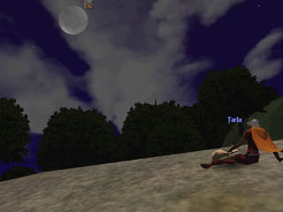
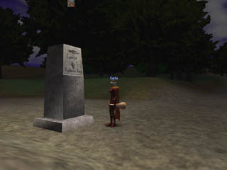

I followed the west road out of Ludlow. The guards at the tower outside of town were watchful, and I followed another guard to the edge of the Black Mountains, where I took leave of him and walked into the Camelot Hills.
Plague spiders overran the place; I killed those I saw. A dyemaster walked about looking for the bits he needed to make new colors. I nodded to him as I passed, and promised to keep for him any dye components I could find. Perhaps he could mix me a color nobody has before seen.
 Night fell and the moon lit the broken clouds as they raced across the sky, letting through glimpses of the fixed stars which I used to guide me on my way. The marker stone for Camelot rose out of the darkness, with an arrow pointing past it to Prydwen Keep. I started running, then; would Ahmid be glad to see his sister, or would he rush immediately to Father's side?
The Keep was built atop a rocky hill and I ran lightly up the path. It was a place of solid stone, and I could not think of what army could harm this place. I bound my essence to the place and asked for word of my brother. The people there, though, had voice for only one concern - the undead rising from the cemetary nearby.
A cleric implored me to put to rest the remains of a man named Mugrot. What can a rogue do, hardly trained in her art? Only her best, and thus I set out for the cemetary. Puny skeletons rose against me but my flint dirk made short work of them. Decayed zombies yearned for my brains but died to my blade. At night though I saw a zombie larger than the rest and knew I had found my prey. I could not defeat him; he was too powerful for me. Still, I had given my word, and vowed to end this threat to the peace of Prydwen Keep. Only hubris could help. And so he did, taking the blows from this fearsome creature as I flensed his crawling flesh from his rotted bones. I thanked Hubris; he suggested the belt found amongst the carnage might have some small magic attached to it; I put it on and felt the magic of animation run through my body.
 The threat vanquished, I asked the people of Prydwen if they had seen a Saracen come by with a ready smile and a song in his heart, but they would only admit to seeing a number of people recently who were being sent to the Midgard front. Some of them were Saracen, and perhaps one had been dear Ahmid, but not a one were smiling.
They warned me I was not strong enough to journey so far, but perhaps I could take service with Prydwen? My search, though, drew me on. I stayed to help the good people of Prydwen Keep kill the other undead. They sometimes dropped tattered armor; not in the best condition but certainly better protection than what I had. I soon was well protected, with enough money to perhaps buy better armor.
The armorers in Prydwen Keep did not have the style of armor I liked, so I decided to return to Ludlow and see what the armorer there had available. Perhaps there I could finish my study of the roguish art and decide where to look next for my brother.